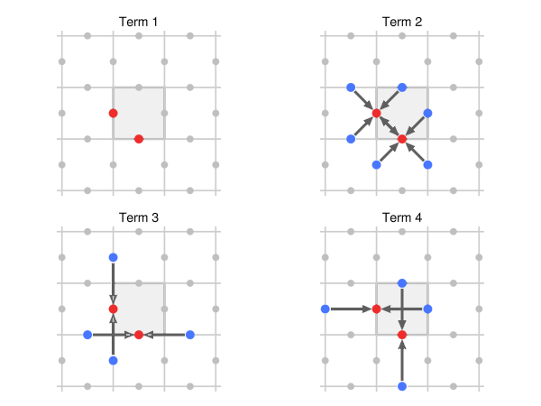
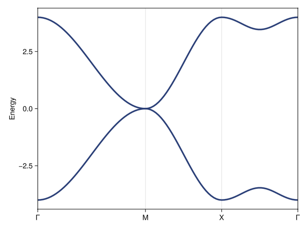
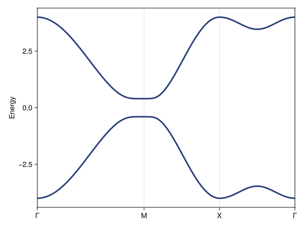

Symmetry breaking
A frequent question in tight-binding modelling is whether – and which – new hoppings terms might become allowed if the overall symmetry is reduced, either by breaking spatial symmetries or time-reversal symmetry. Such terms might e.g., break degeneracies or enable topological phase transitions.
SymmetricTightBinding.jl exports subduced_complement as a tool to answer exactly this question. Here, we apply it to understand the effect of symmetry breaking on a 2-band model in plane group p4mm (⋕11).
We start by constructing our symmetry-unbroken model, picking the (2c|A₁) band representation of p4mm:
julia> using Crystalline, SymmetricTightBindingjulia> brs = bandreps(11, Val(2))14-element Collection{BandRep{2}} for ⋕11 (p4mm) over 14 irreps (spinless w/TR): ────┬──────────────────────────────────────────────────────── │ 2c 2c 2c 2c 1b 1b 1b 1b 1b 1a 1a 1a 1a 1a │ A₁ A₂ B₂ B₁ A₁ B₁ B₂ A₂ E A₁ B₁ B₂ A₂ E ────┼──────────────────────────────────────────────────────── Γ₁ │ 1 · · · 1 · · · · 1 · · · · Γ₂ │ 1 · · · · 1 · · · · 1 · · · Γ₃ │ · 1 · · · · 1 · · · · 1 · · Γ₄ │ · 1 · · · · · 1 · · · · 1 · Γ₅ │ · · 1 1 · · · · 1 · · · · 1 M₁ │ · · · 1 · · 1 · · 1 · · · · M₂ │ · · · 1 · · · 1 · · 1 · · · M₃ │ · · 1 · 1 · · · · · · 1 · · M₄ │ · · 1 · · 1 · · · · · · 1 · M₅ │ 1 1 · · · · · · 1 · · · · 1 X₁ │ 1 · · 1 · · · · 1 1 1 · · · X₂ │ · 1 1 · · · · · 1 · · 1 1 · X₃ │ · 1 · 1 · · 1 1 · · · · · 1 X₄ │ 1 · 1 · 1 1 · · · · · · · 1 ────┼──────────────────────────────────────────────────────── μ │ 2 2 2 2 1 1 1 1 2 1 1 1 1 2 ────┴────────────────────────────────────────────────────────julia> cbr = @composite brs[1]14-irrep CompositeBandRep{2} (spinless): (2c|A₁) (2 bands)julia> Rs = [[0,0], [1,0]]2-element Vector{Vector{Int64}}: [0, 0] [1, 0]julia> tbm = tb_hamiltonian(cbr, Rs)5-term 2×2 TightBindingModel{2} (hermitian, spinless) over (2c|A₁), where zᵢ=exp(-2πik·δᵢ): ┌─ 1. ⎡ 1 0 ⎤ │ ⎣ 0 1 ⎦ └─ (2c|A₁) self-term. ┌─ 2. ⎡ 0 z₁+z̄₁+z₂+z̄₂ ⎤ │ ⎣ z₁+z̄₁+z₂+z̄₂ 0 ⎦ └─ (2c|A₁) self-term. δ₁=[1/2,-1/2], δ₂=[1/2,1/2] ┌─ 3. ⎡ z₁+z̄₁ 0 ⎤ │ ⎣ 0 z₂+z̄₂ ⎦ └─ (2c|A₁) self-term. δ₁=[1,0], δ₂=[0,1] ┌─ 4. ⎡ z₂+z̄₂ 0 ⎤ │ ⎣ 0 z₁+z̄₁ ⎦ └─ (2c|A₁) self-term. δ₁=[1,0], δ₂=[0,1] ┌─ 5. ⎡ 0 z₁+z̄₁+z₂+z̄₂+z₃+z̄₃+z₄+z̄₄ ⎤ │ ⎣ z₁+z̄₁+z₂+z̄₂+z₃+z̄₃+z₄+z̄₄ 0 ⎦ └─ (2c|A₁) self-term. δ₁=[3/2,-1/2], δ₂=[1/2,3/2], δ₃=[3/2,1/2], δ₄=[1/2,-3/2]julia> ptbm = tbm([0, 1, -1, 1, 0])5-term 2×2 ParameterizedTightBindingModel{2} (hermitian, spinless) over (2c|A₁) with amplitudes: [0, 1.0, -1.0, 1.0, 0]
We can visualize the tight-binding terms using plot, providing also a lattice basis for the illustration:
using GLMakie
plot(tbm[1:4], directbasis(11, Val(2)))
We show just the first four terms (the omitted 5th term is a longer-range hopping).
The parameterized model has a quadratic degeneracy at M, associated with the M₅ irrep:
julia> using Brillouin, GLMakiejulia> kp = irrfbz_path(11, directbasis(11, Val(2)));julia> kpi = interpolate(kp, 100);
plot(kpi, spectrum(ptbm, kpi))
We can study whether any additional terms become allowed if we reduce the symmetry. For instance, we might break the 4-fold rotational symmetry, reducing the plane group symmetry from p4mm (#11) to p2mm (#6):
julia> Δtbm_C₄ = subduced_complement(tbm, Rs, 6) # break 4-fold rotation sym.4-term 2×2 TightBindingModel{2} (hermitian, spinless) over (2c|A₁), where zᵢ=exp(-2πik·δᵢ): ┌─ 1. ⎡ 1 0 ⎤ │ ⎣ 0 -1 ⎦ └─ (2c|A₁) self-term. ┌─ 2. ⎡ z₁+z̄₁ 0 ⎤ │ ⎣ 0 -z₂-z̄₂ ⎦ └─ (2c|A₁) self-term. δ₁=[1,0], δ₂=[0,1] ┌─ 3. ⎡ -z₂-z̄₂ 0 ⎤ │ ⎣ 0 z₁+z̄₁ ⎦ └─ (2c|A₁) self-term. δ₁=[1,0], δ₂=[0,1] ┌─ 4. ⎡ 0 z₁+z̄₁-z₂-z̄₂+z₃+z̄₃-z₄-z̄₄ ⎤ │ ⎣ z₁+z̄₁-z₂-z̄₂+z₃+z̄₃-z₄-z̄₄ 0 ⎦ └─ (2c|A₁) self-term. δ₁=[3/2,-1/2], δ₂=[1/2,3/2], δ₃=[3/2,1/2], δ₄=[1/2,-3/2]
This allows four additional terms.
tbm does not carry information about the Rs that it was built with: only the resulting terms. These terms need not include hoppings for every element of Rs in general, since some Rs[i] hoppings may be forbidden in the parent group (here, p4mm). On symmetry reduction, such terms may nevertheless be allowed in the subgroup.
Rs must therefore be provided and must be the same as the one tbm was built with: a larger Rs would also return longer-range terms that p4mm allows (a subset is also possible, resulting then in a corresponding subset of the full complement of subgroup terms). Likewise, tbm should be the full model tb_hamiltonian(cbr, Rs), not a subset of its terms.
Conversely, we could have also tried to break time-reversal or mirror symmetry (in the latter case, reducing the plane group symmetry to p4 (⋕10)). Each of these allows just one new term, involving the longer-range hoppings of term 5 [1]:
julia> Δtbm_m = subduced_complement(tbm, Rs, 10) # break mirror1-term 2×2 TightBindingModel{2} (hermitian, spinless) over (2c|A₁), where zᵢ=exp(-2πik·δᵢ): ┌─ 1. ⎡ 0 z₁+z̄₁+z₂+z̄₂-z₃-z̄₃-z₄-z̄₄ ⎤ │ ⎣ z₁+z̄₁+z₂+z̄₂-z₃-z̄₃-z₄-z̄₄ 0 ⎦ └─ (2c|A₁) self-term. δ₁=[3/2,-1/2], δ₂=[1/2,3/2], δ₃=[3/2,1/2], δ₄=[1/2,-3/2]julia> Δtbm_tr = subduced_complement(tbm, Rs, 11; timereversal = false) # break TR1-term 2×2 TightBindingModel{2} (hermitian, spinless) over (2c|A₁), where zᵢ=exp(-2πik·δᵢ): ┌─ 1. ⎡ 0 -iz₁-iz̄₁+iz₂+iz̄₂-iz₃-iz̄₃+iz₄+iz̄₄ ⎤ │ ⎣ iz₁+iz̄₁-iz₂-iz̄₂+iz₃+iz̄₃-iz₄-iz̄₄ 0 ⎦ └─ (2c|A₁) self-term. δ₁=[3/2,-1/2], δ₂=[1/2,3/2], δ₃=[3/2,1/2], δ₄=[1/2,-3/2]
We can also break both mirror and time-reversal symmetries simultaneously:
julia> Δtbm_mtr = subduced_complement(tbm, Rs, 10; timereversal = false) # break mirror & TR4-term 2×2 TightBindingModel{2} (hermitian, spinless) over (2c|A₁), where zᵢ=exp(-2πik·δᵢ): ┌─ 1. ⎡ 0 -iz₁-iz̄₁+iz₂+iz̄₂ ⎤ │ ⎣ iz₁+iz̄₁-iz₂-iz̄₂ 0 ⎦ └─ (2c|A₁) self-term. δ₁=[1/2,-1/2], δ₂=[1/2,1/2] ┌─ 2. ⎡ 0 z₁+z̄₁+z₂+z̄₂-z₃-z̄₃-z₄-z̄₄ ⎤ │ ⎣ z₁+z̄₁+z₂+z̄₂-z₃-z̄₃-z₄-z̄₄ 0 ⎦ └─ (2c|A₁) self-term. δ₁=[3/2,-1/2], δ₂=[1/2,3/2], δ₃=[3/2,1/2], δ₄=[1/2,-3/2] ┌─ 3. ⎡ 0 -iz₁-iz̄₁+iz₂+iz̄₂ ⎤ │ ⎣ iz₁+iz̄₁-iz₂-iz̄₂ 0 ⎦ └─ (2c|A₁) self-term. δ₁=[3/2,-1/2], δ₂=[1/2,3/2], δ₃=[3/2,1/2], δ₄=[1/2,-3/2] ┌─ 4. ⎡ 0 -iz₃-iz̄₃+iz₄+iz̄₄ ⎤ │ ⎣ iz₃+iz̄₃-iz₄-iz̄₄ 0 ⎦ └─ (2c|A₁) self-term. δ₁=[3/2,-1/2], δ₂=[1/2,3/2], δ₃=[3/2,1/2], δ₄=[1/2,-3/2]
That the result is effectively "more than the sum of the parts" of breaking time-reversal and mirror symmetry individually is merely a reflection of the fact that the additional terms are only allowed when both time-reversal symmetry and mirror symmetry are broken (or, put differently, these terms are not invariant under either symmetry, and so forbidden in the presence of either).
To determine which symmetry-reductions are possible – or, equivalently, which subgroups a particular group might have – use Crystalline.jl's maximal_subgroups(num(tbm)). Note, however, that subduced_complement only allows subgroup-relationships that do not involve a change of unit cell volume; i.e., the subgroup relationship cannot be associated with a change of translational symmetry.
We can build a new "total" model, incorporating both the original terms as well as any additional symmetry-breaking terms by using vcat. For instance, we could incorporate the mirror-and-time-reversal symmetry breaking term into the original model:
julia> tbm′ = vcat(tbm, Δtbm_mtr)9-term 2×2 TightBindingModel{2} (hermitian, spinless) over (2c|A₁), where zᵢ=exp(-2πik·δᵢ): ┌─ 1. ⎡ 1 0 ⎤ │ ⎣ 0 1 ⎦ └─ (2c|A₁) self-term. ┌─ 2. ⎡ 0 z₁+z̄₁+z₂+z̄₂ ⎤ │ ⎣ z₁+z̄₁+z₂+z̄₂ 0 ⎦ └─ (2c|A₁) self-term. δ₁=[1/2,-1/2], δ₂=[1/2,1/2] ┌─ 3. ⎡ z₁+z̄₁ 0 ⎤ │ ⎣ 0 z₂+z̄₂ ⎦ └─ (2c|A₁) self-term. δ₁=[1,0], δ₂=[0,1] ┌─ 4. ⎡ z₂+z̄₂ 0 ⎤ │ ⎣ 0 z₁+z̄₁ ⎦ └─ (2c|A₁) self-term. δ₁=[1,0], δ₂=[0,1] ┌─ 5. ⎡ 0 z₁+z̄₁+z₂+z̄₂+z₃+z̄₃+z₄+z̄₄ ⎤ │ ⎣ z₁+z̄₁+z₂+z̄₂+z₃+z̄₃+z₄+z̄₄ 0 ⎦ └─ (2c|A₁) self-term. δ₁=[3/2,-1/2], δ₂=[1/2,3/2], δ₃=[3/2,1/2], δ₄=[1/2,-3/2] ┌─ 6. ⎡ 0 -iz₁-iz̄₁+iz₂+iz̄₂ ⎤ │ ⎣ iz₁+iz̄₁-iz₂-iz̄₂ 0 ⎦ └─ (2c|A₁) self-term. δ₁=[1/2,-1/2], δ₂=[1/2,1/2] ┌─ 7. ⎡ 0 z₁+z̄₁+z₂+z̄₂-z₃-z̄₃-z₄-z̄₄ ⎤ │ ⎣ z₁+z̄₁+z₂+z̄₂-z₃-z̄₃-z₄-z̄₄ 0 ⎦ └─ (2c|A₁) self-term. δ₁=[3/2,-1/2], δ₂=[1/2,3/2], δ₃=[3/2,1/2], δ₄=[1/2,-3/2] ┌─ 8. ⎡ 0 -iz₁-iz̄₁+iz₂+iz̄₂ ⎤ │ ⎣ iz₁+iz̄₁-iz₂-iz̄₂ 0 ⎦ └─ (2c|A₁) self-term. δ₁=[3/2,-1/2], δ₂=[1/2,3/2], δ₃=[3/2,1/2], δ₄=[1/2,-3/2] ┌─ 9. ⎡ 0 -iz₃-iz̄₃+iz₄+iz̄₄ ⎤ │ ⎣ iz₃+iz̄₃-iz₄-iz̄₄ 0 ⎦ └─ (2c|A₁) self-term. δ₁=[3/2,-1/2], δ₂=[1/2,3/2], δ₃=[3/2,1/2], δ₄=[1/2,-3/2]
And we can then verify that the original band degeneracy at M is split when the mirror-and-time-reversal-breaking term is nonzero:
julia> ptbm′ = tbm′([0, 1, -1, 1, 0 #= original terms =#, 0.1, 0, 0, 0 #= symmetry breaking =#])9-term 2×2 ParameterizedTightBindingModel{2} (hermitian, spinless) over (2c|A₁) with amplitudes: [0, 1.0, -1.0, 1.0, 0, 0.1, 0, 0, 0]
plot(kpi, spectrum(ptbm′, kpi))
While the "total" models tbm′ and ptbm′ work well for e.g., band structure purposes, they are not amenable to symmetry analysis in the symmetry-reduced setting. This is because the associated band representations in tbm′, which are used to infer the "ingredients" of the symmetry analysis, still refer to the original group's symmetry, i.e., to p11 rather than p10.
This may change in future versions of SymmetricTightBinding.jl, depending on available time.
- 1Including longer-range hoppings in
Rsgenerally allows further symmetry-breaking terms; e.g., for a model built withRs = [[0,0], [1,0], [1,1]], breaking mirror symmetry allows two new terms.